需要准备的东西：
►纸板
►回形针或黄铜纸扣
►CD或DVD
►剪刀
►铅笔
►透明胶带
►纸
你可以使用下一页的插图作为实验参考，并按步骤操作。
首先，用纸板制作一张CD或DVD大小的圆盘，或者用一个罗盘来创建直径为3厘米的圆盘，如图5-40所示。

图5-40
接下来，裁剪出如图5-41所示的矩形盖，包括“窗口”孔或者，你可以把一支笔固定在虚线上，把窗孔部分剪掉。
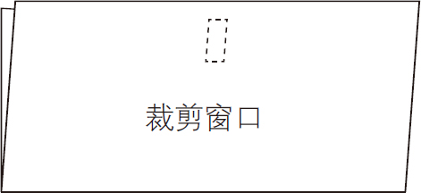
图5-41
把盖子对折，在窗孔下方打一个洞，如图5-42所示。也在圆盘的中心打一个孔，如图5-43所示。把圆盘小心地放在盖子上，并从盖子的外面和盘上推上黄铜纸扣件或回形针固定夹，如图5-44所示。
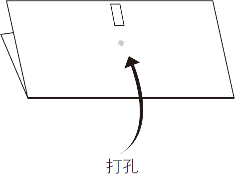
图5-42
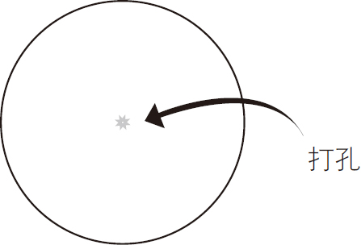
图5-43
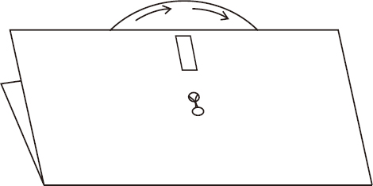
图5-44
按顺时针方向拨盘，选择一个积分上限数字，并找到与曲线下显示的区域相匹配的方程，见图5-45。
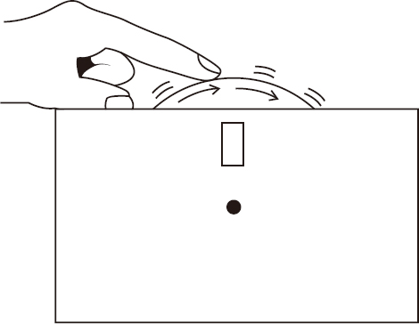
图5-45
 转动刻度盘查找曲线下的面积公式。
转动刻度盘查找曲线下的面积公式。

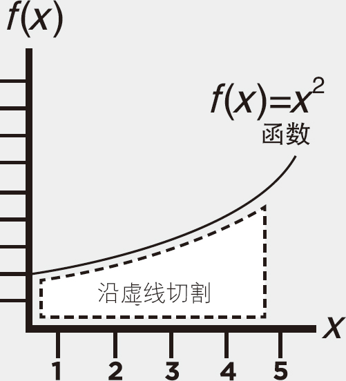
通过将无限个小矩形区域面积求和，可以计算函数曲线的面积。“面积”可以表示物理面积、利润增益、衰变损耗等。
定积分公式
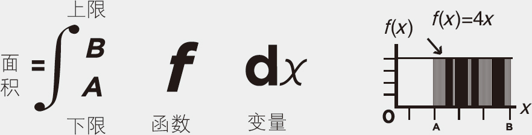
例1：汽车以每小时60千米的速度行驶了三个小时，求汽车行驶的距离？
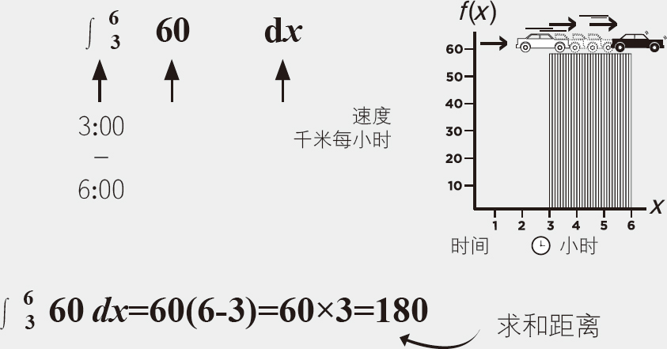
例2：计算函数f （x ）＝x 2 为从0到2曲线下的面积。
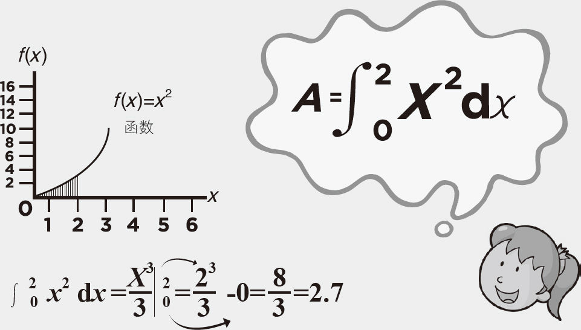
从0到2曲线下的面积＝2.7
例1：x 2 变成
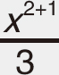
或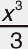
例2：x 3 变成
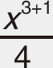
或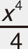
下图是实验的一个举例说明。